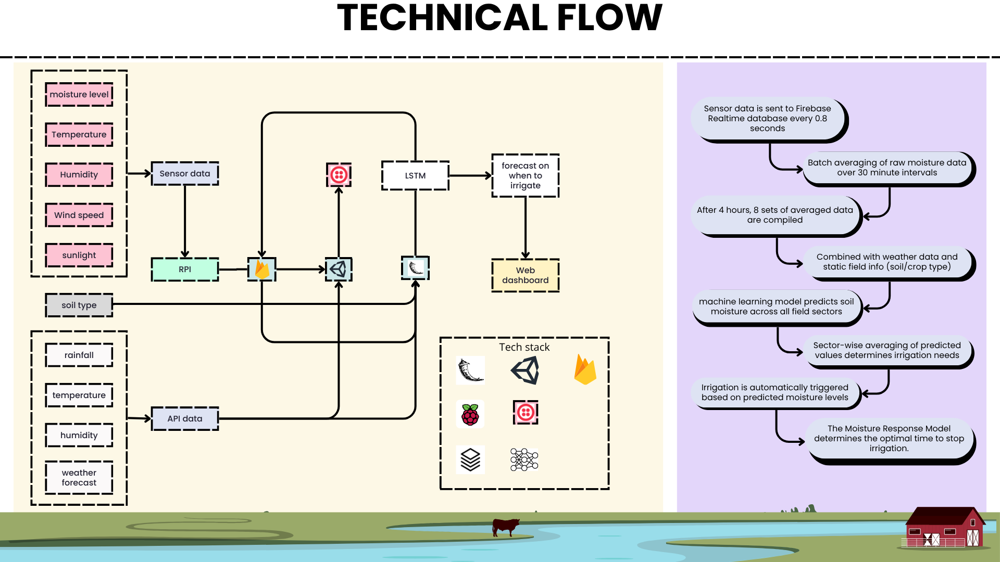

Real-time smart farming dashboard with Firebase IoT integration, OpenWeatherMap REST API, multilingual UI (English/Hindi/Marathi), and automated irrigation control. Selected for the Pune Agri National Level Hackathon.

AgriDrip is a live dashboard, not a game, built in Unity for actual field use. It connects to IoT hardware over Firebase, reads soil moisture from sensors, and sends irrigation commands back to pumps based on thresholds. The whole loop runs in realtime: sensor -> Firebase -> Unity evaluates -> writes command -> pump responds.
Presented at the Pune Agri National Level Hackathon (2024).
- 3D soil cube uses Color.Lerp (blue = wet, red = dry) so you can tell moisture at a glance before reading any numbers.
- Auto/Manual toggle blocks manual input while automation is active, the UI can't fight itself.
- Rain particles respond to live OpenWeatherMap data so the dashboard reflects outdoor conditions passively.
- English/Hindi/Marathi built for farmers actually using it in the field, not added as an afterthought.
- SMS via Twilio as a backup for when nobody's watching the screen.

- Sensor data is sent to Firebase Realtime Database every 0.8 seconds.
- Batch averaging of raw moisture data over 30-minute intervals reduces noise and cloud load.
- After 4 hours, 8 sets of averaged data are compiled and combined with weather API data and static field info (soil/crop type).
- The LSTM model predicts soil moisture across all field sectors from this compiled dataset.
- Sector-wise averaging of predicted values determines which zones need irrigation and when.
- Irrigation is automatically triggered based on predicted moisture levels, no manual intervention needed.
- The Moisture Response Model determines the optimal time to stop irrigation, preventing over-watering.
FirebaseManager is the data hub. It fires typed C# events (OnSensorDataReceived, OnMotorStatusChanged, OnValveStatusChanged) and everything else subscribes. Subsystems don't talk to each other directly.
- Async coroutine init with a dependency check before any DB references are created.
- Three ValueChanged listeners, no polling, push-based.
- Manual Dictionary<string,object> parsing with ToFloat/ToInt helpers.
- Queue<Action> + Update() marshals Firebase callbacks onto the Unity main thread. WebGL-safe.
- Nested Dictionary localisation with Devanagari Unicode digit conversion and dynamic TMP font switching per language.
- Twilio SMS fires only on motor state change so it doesn't spam if the status stays the same.